汇特讯-融合通信一张图指挥调度平台
使用手册
北京七山创智科技有限公司
目录
融合通信一张图指挥调度平台运行环境
融合通信一张图指挥调度平台推荐运行环境在Windows 10 64位、Windows 7 SP2 64位环境上稳定运行。
推荐CPU：Intel(R) Core(TM) i5-9400 CPU 及以上
推荐GPU：Intel(R) UHD Graphics 630及以上，NVIDIA-GeForce系列
推荐浏览器：Microsoft Edge、Google Chrome浏览器
推荐外设：可使用外接摄像头、Mic等外接设备提升平台音质与摄像头画面质量。
第1章 产品简介
融合通信一张图调度平台以地图为核心载体，依托可视化技术实现指挥调度全流程的直观呈现，旨在打破传统调度模式的信息壁垒，让指挥决策更精准、调度指令更高效、资源协同更顺畅。
主要特性
- 提供专业品质的用户图形化界面；
- 先进的音视频处理技术，保证高品质的语音和视频质量；
- 实时显示用户状态；
- GIS地图显示集群通终端位置及状态信息，支持轨迹回放；
- 支持AI记录功能；
- 调度操作采用一体化界面，操作便利；
- 多线路共存，利于多样调度操作。
主要功能
- 语音呼叫、对讲
- 对讲抢话、对讲切换、对讲组单个/全部禁言、追呼
- 视频监控（最多支持16路）、视频查看
- 视频分发、拍照
- 录制查询、播放、下载
- 对讲记录、文件查询、播放、下载
- 通话记录、文件查询、播放、下载
- GIS数据记录、文件查询、下载
- 上下线记录查询、下载
- 消息记录查询、下载
- 遥毙、激活
- 监控功能
- 能够通过图标颜色和文字指示出用户状态
- GIS功能
- GIS定位、轨迹回放
- 测距、测面积
- 显示组内成员定位
- 定位筛选
- 视频会商
- 语音会议
- 视频会议
- 管理功能
- 用户管理：对用户属性进行管理，实时显示用户状态
- 权限管理：对用户权限进行管理
- 密码修改：当前console登录用户可修改自身密码
第2章 系统登录
使用浏览器打开链接https://rtc.wisecommey.com:2551/，显示融合通信一张图指挥调度平台登录界面；
输入登录信息：
- 登录名/密码：即登录该平台的用户名和密码；
点击【登录】按钮，登录。
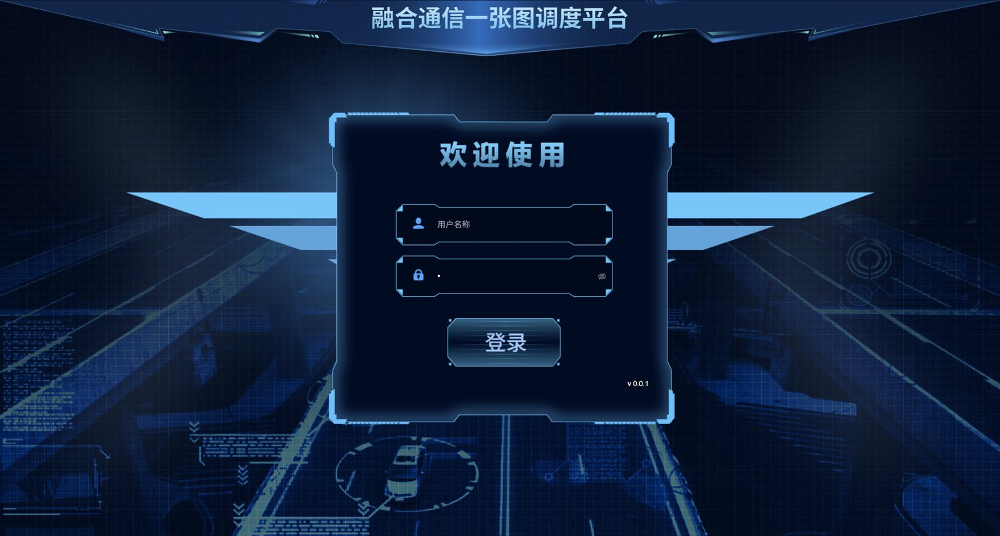
图2-1 登录界面
第3章 调度台界面
3-1 调度台主控界面
登录平台后首页以地图可视化界面为核心载体，聚焦指挥调度的 “实时感知、快速操作”
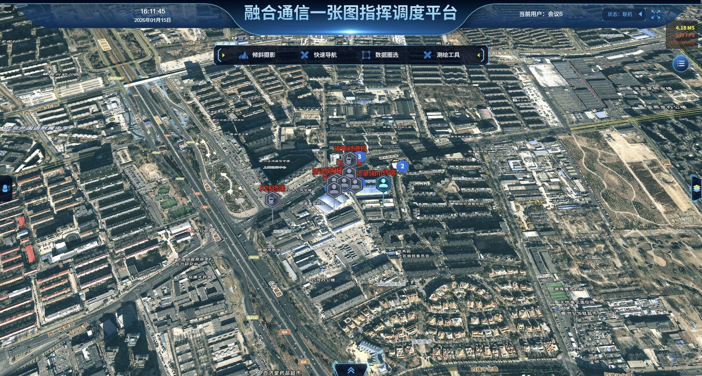
图3-1 主界面
3-2 平台标识与状态栏
顶部显示平台标识、名称，同步展示当前时间、日期，以及当前登录用户信息、在线状态（如 “状态：联机”），辅助操作人员快速确认平台身份与自身权限。
图3-2 状态栏
3-3 地图调度
地图界面中，加载高精度卫星 / 电子地图，实时显示终端位置及状态信息。
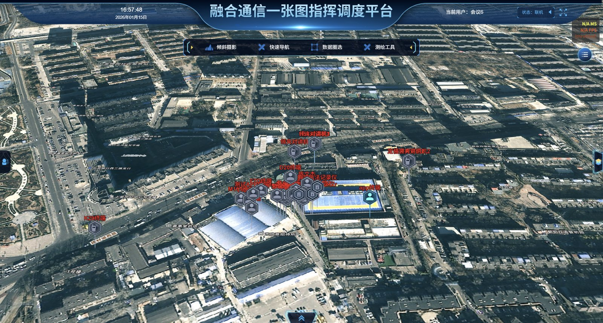
图3-3 定位显示
平移
在GIS地图监控区域，可以通过鼠标进行平移操作以便查看。
放大/缩小
在GIS地图监控区域上滑动左侧上下滑动条，或者滑动鼠标滚轮，对某区域位置进行放大或缩小的查看。
定位
终端上开启GPS定位后，可以上传数据到服务器，调度台可以通过GIS数据获取接口获取到终端上传的数据，显示在GIS地图界面。
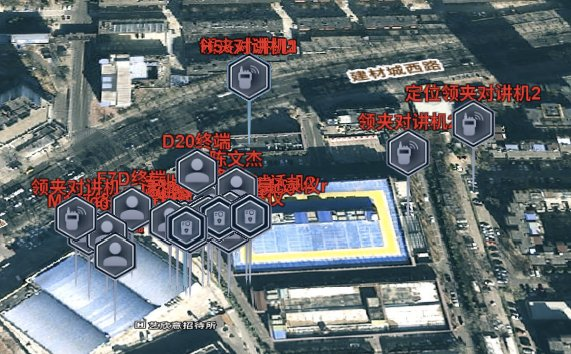
图3-4 定位
用户信息
在GIS地图上，用鼠标左键点击一下用户的图标，可查看用户的详细信息和可调度的功能按键（语音呼叫、视频呼叫）。
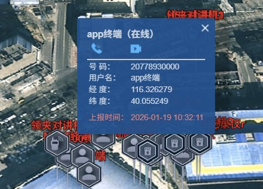
图3-5 GIS界面-用户信息
语音呼叫
在GIS地图上点击某个用户图标，显示用户信息框中，出现调度功能按键，点击【语音呼叫】即对此用户发起语音呼叫。
视频随动
在GIS地图上点击某个用户图标，显示用户信息框中，出现调度功能按键，点击【视频呼叫】即对此用户发起视频随动，地图界面弹出视频窗口，接通后显示视频画面。该画面跟随终端定位点移动发生改变。
工具
调度台用户可以在GIS地图上的快速操作，进行“倾斜摄影”“快速导航”“数据圈选”“测绘工具” 等快捷操作
- 倾斜摄影：调整地图观看角度。
- 快速导航：可快速定位到目标定位区域。
- 数据圈选：可在地图中目标区域进行圈选操作，快速选中区域中所有成员。
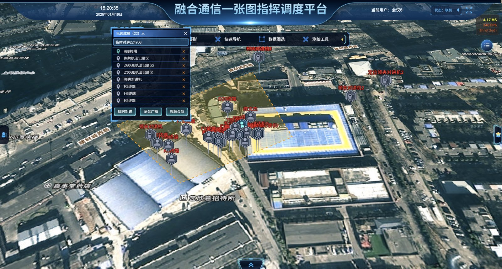
图3-6 GIS-圈选
- 测距：点击测距按钮，鼠标变成测距图标，单击开始，双击结束，自动显示距离（包括分段长度和总长）。点击结束点旁显示关闭按钮可清除测距线条。
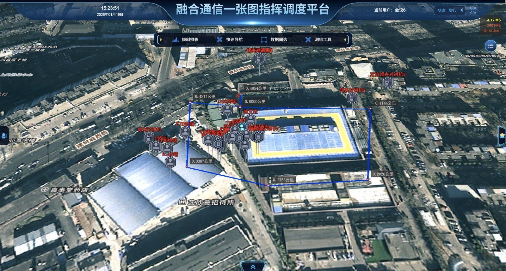
图3-7 GIS界面-测距
- 测面积：点击测面积按钮，鼠标变成测面积图标，面积绘制完成后，显示此次测绘的面积数据；面积区域显示为灰色，起点旁显示关闭按钮，点击关闭按钮可清除绘制的面积区域。
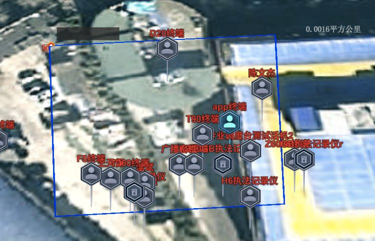
图3-8 GIS界面-测面积
3-4 通讯录
地图页面页面左侧显示通讯录列表。
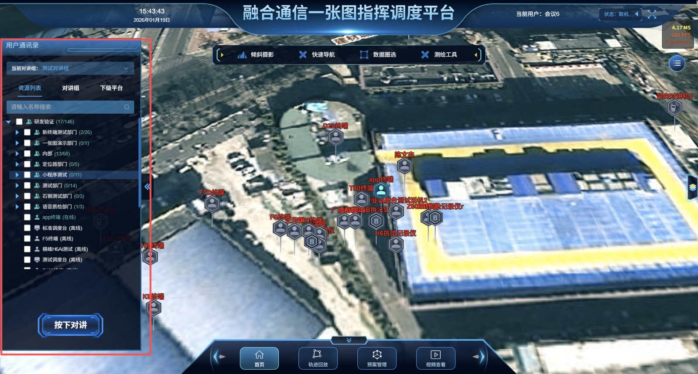
图3-9 通讯录界面
列表显示系统中对讲组用户分布列表以及企业通讯录（调度台用户与监控摄像头在通讯录的最后端展示）。可以根据需要，点击右侧小箭头隐藏/显示通讯录界面。
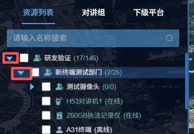
图3-10 通讯录列表展示
3-5 对讲组
用户点击地图调度功能，界面跳转地图界面，页面左侧显示通讯录列表，点击对讲组进行切换。
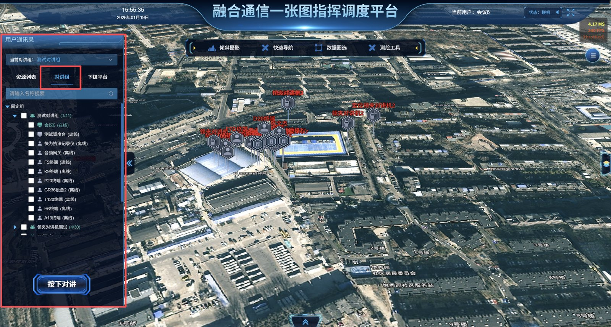
图3-11 对讲组列表展示
对讲组用户列表分为固定组和临时对讲两部分：
- 固定组：该列表显示由管理员在AMP中创建的组；
- 临时对讲：该列表显示临时对讲记录。
鼠标右键单击某一对讲组，弹出功能菜单，可进行快捷操作：
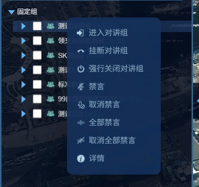
图3-12 调度台对讲组快捷操作
鼠标移动到树形列表中的用户上，右键单击用户（只针对非本调度台终端），弹出功能菜单。对讲组和通讯录的用户列表均可进行快捷操作，且操作相同，功能一致。若终端无某项功能时，功能项置灰不可点。
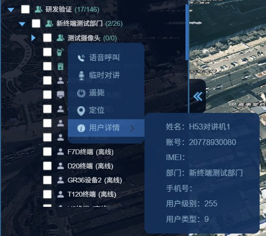
图3-13 调度台对讲组成员快捷操作
- 遥毙/激活：可对终端用户进行激活、遥毙操作（对调度台用户不生效，只针对终端）正常状态下显示为遥毙，用户被遥毙后，显示为激活；遥毙后成员图标变为红色，用户不能发起或接收任何消息及呼叫，此时的用户被强制离线，在遥毙状态下的用户无法登录终端或APP；选择激活后，用户可以登录，进行正常的操作；
- 用户详情：成员右键菜单，滑动到“用户详情”选项，弹出用户详情框，可查看用户姓名、职位、部门、手机号（联系方式）、用户级别、终端类型、产品套餐（支持的功能）等信息。
对讲操作区
进入功能界面左下角是对讲显示区，此区域显示当前正在讲话的用户即话权人，当前登录用户的状态，单击【按下对讲】按钮讲话或释放话权。
若当前有人讲话，可点击【按下对讲】按钮，进入抢话状态，按钮变为【抢话中】，5s后未抢到话权，则自动释放抢话状态，按钮变为【点击对讲】状态。
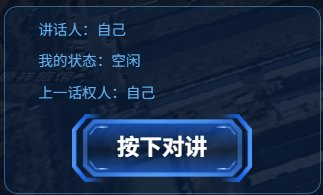
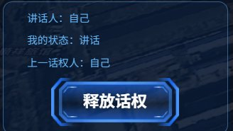
图3-14 调度台对讲操作区
对讲组切换
在“固定操控区”，单击“当前组”所在行，出现对讲组选择列表，可以自由切换；
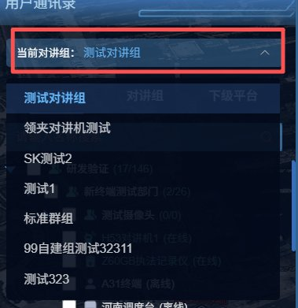
图3-15 切换对讲组界面
在“对讲组&通讯录显示区”，用户使用鼠标右键单击对讲组名称，出现对讲组操作菜单。
- 进入对讲组
点击【进入对讲组】，调度台会加入到该对讲组的会话当中：
如果该对讲组是开启的，调度台切换到该组中，且在里面是听讲的状态；固定操控区的组和状态跟着变化；
如果该对讲组不是开启的，调度台只是切换到该组中，该组成为当前组，用户可以申请话权；固定操控区的组和状态跟着变化。
- 挂断对讲组
点击【挂断对讲组】，调度台用户在对讲组中的会话关闭，组内其他成员可以继续进行对讲。
- 强制关闭对讲组
点击【强制关闭对讲组】，关闭当前对讲组的会话，该组处于关闭状态，组内成员被强行踢出。
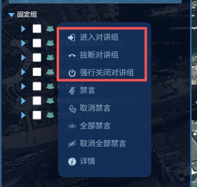
图3-16 对讲组操作菜单界面
对讲组禁言
右键单击对讲组名称，除了上述切换对讲组的操作，还可以对单个或全部对讲组进行禁言/取消禁言的操作。
- 禁言/取消禁言：点击【禁言】后，本组被禁言，本来置灰的【取消禁言】切换成可操作状态，点击可以取消禁言设置；
- 全部禁言/取消全部禁言：点击【全部禁言】后，所有对讲组被禁言，本来置灰的【取消全部禁言】切换成可操作状态，点击可以取消全部禁言的设置。
3-6 语音呼叫
在“对讲组&通讯录显示区”中，滑动鼠标到某用户单击鼠标右键，出现快捷操作功能对话框，点击【语音呼叫】按钮发起语音呼叫；
发起呼叫，且呼叫线路建立后，
调度主界面中：调度台右侧线路列表显示被叫名称/号码、去电状态、挂断，被呼叫方显示来电界面，“来电提醒窗口”显示来电名称/号码、接听、挂断；此时，等待被呼叫方接听即可。
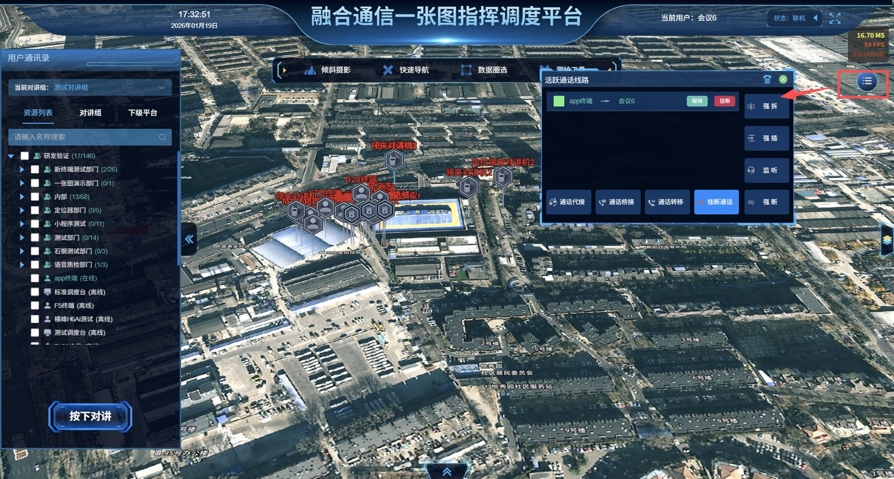
图3-17 语音呼叫去电界面
接听来电
- 空闲状态
当调度台用户空闲时，有来电呼入，调度台线路列表与右下方弹出“来电提醒”提示窗口，此时，调度台用户可选择接听或拒接来电。
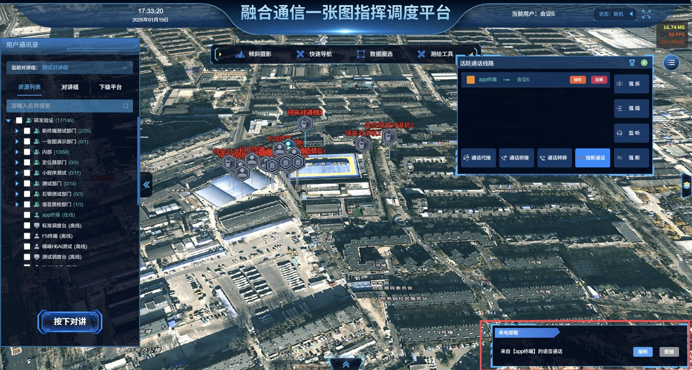
图3-18 来电提醒提示框
- 接听来电：
单击【接听】，即可接听。主界面出现通话窗口，显示对端名称/号码、通话时间以及【挂断】按钮。
- 挂断来电：
直接单击通话窗口下方的【挂断】按钮。
- 非空闲状态
当调度台用户处于非空闲状态时，有来电呼入，调度主界面中弹出提示框。
调度台可保持上一路通话，与新接来电进行语音通话。
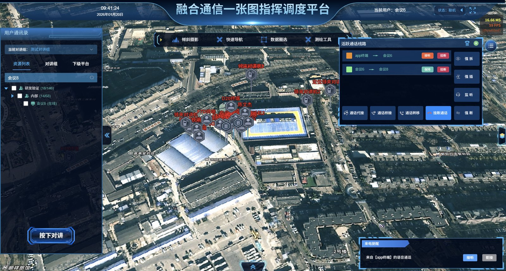
图3-19 非空闲来电提醒提示框
一键告警来电
调度台接收到一键告警的来电后，调度台会响起警报声，并弹出呼入选择窗口。
点击【接听】按钮，即接听来电；
点击【挂断】按钮，即拒接来电。
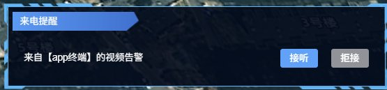
图3-20 一键告警来电提醒提示框
活跃线路
平台用户可在活跃线路中看到企业中正在进行的语音线路，并进行，监听、强插、强拆、强断等语音调度功能；
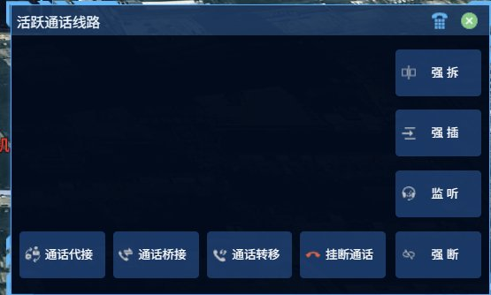
图3-21 线路状态
监听：选择目标通话线路后，发起监听操作，即可实时监听该条语音通话线路；监听时，活跃线路中会显示平台正在监听的线路；
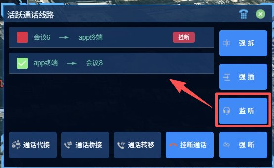
图3-22 监听线路状态
强插：调度人员选择目标通话后，发起 “强插” 操作，系统会将其接入当前通话链路，实现三方及以上的实时语音通话；
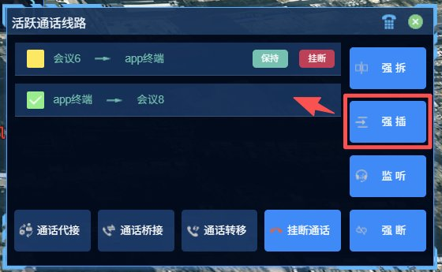
图3-23 强插线路状态
强拆：调度人员选定需中断的通话后，执行 “强拆” 操作，系统将强制终止该通话的语音连接；
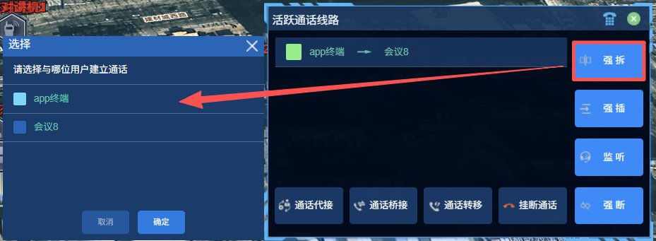
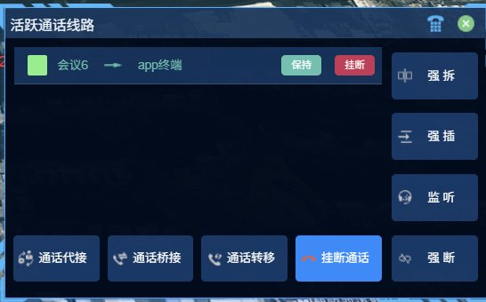
图3-24 强拆线路状态
强断：调度人员选定需中断的通话后，执行 “强拆” 操作，系统将强制终止该通话的语音线路。
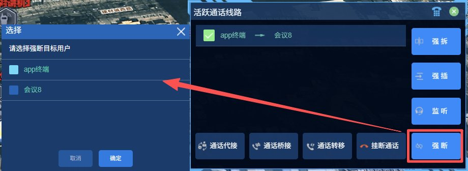
图3-25 强断线路状态
通话代接：平台在活跃线路中查看到用户始终在振铃状态时，可选择通话代接功能，代替用户接听；
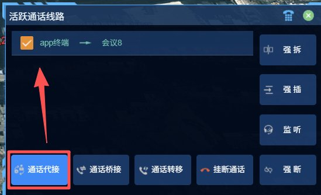
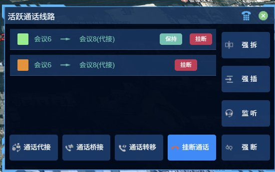
图3-26 通话代接状态
通话转移：平台在活跃线路中选择 通话线路，点击“通话转移” 功能，从用户列表中选定目标用户后，即可完成通话转接，整个过程不中断原有语音。
通话桥接：调度人员选择需桥接的两条通信链路，发起桥接操作后，系统会建立链路之间的语音转发通道，实现跨链路语音交互。
挂断通话
- 拒接来电
当有来电呼入时，调度台用户可直接点击“来电提醒”窗口中的【挂断】按钮，拒接来电。
- 挂断正在进行中的通话
通话正在进行中，调度台用户可直接点击“通话”窗口中的【挂断】按钮，即可挂断通话。
3-7 临时对讲
在“对讲组&通讯录显示区”中，勾选成员前面的复选框，在调度台界面弹出选中成员列表，可以在不同对讲组或部门中选择成员，选择完成后点击【临时对讲】可发起临时对讲。
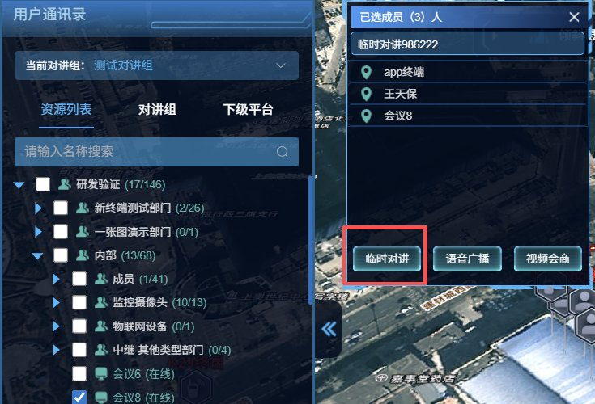
图3-27 发起临时对讲
调度台用户可在复选框上方修改临时对讲组名称，以方便识别对讲组。
发起临时对讲后，出现临时对讲界面；
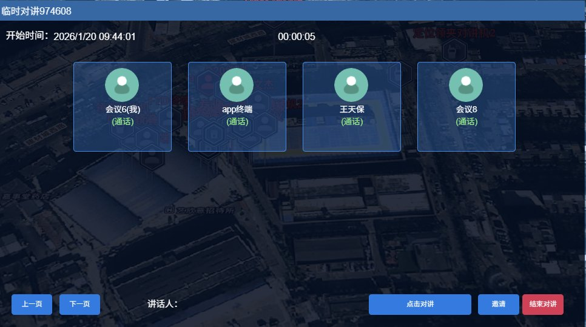
图3-28 临时对讲界面
- 左上角窗口显示临时对讲名称；
- 左下角显示当前讲话人；
- 点击【点击对讲】按钮，申请话权，抢到话权后可以进行讲话；点击【点击释放话权】按钮，释放话权；
- 点击【结束对讲】按钮，结束本次临时对讲；
- 点击“邀请”按钮，弹出成员列表框，可为临时对讲添加新成员。
3-8 语音广播
在“对讲组&通讯录显示区”中，勾选成员前面的复选框，在调度台界面弹出选中成员列表，可以在不同对讲组或部门中选择成员，选择完成后点击【语音广播】可发起语音广播。
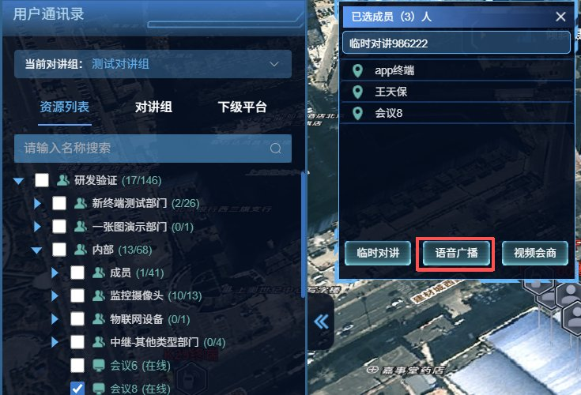
图3-29 发起语音广播
发起语音广播后，出现语音广播弹窗；
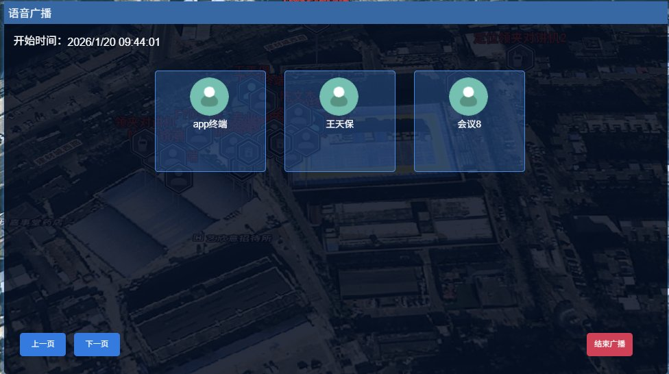
图3-30 语音广播界面
发起语音广播后调度台弹出语音广播弹窗，弹窗内显示已邀请成员。
成员未进入广播时成员状态显示振铃；
成员进入广播后成员状态显示通话；
成员进入广播后，调度台直接发起讲话即可；
结束广播时，可点击语音广播弹窗右下角“结束广播”按钮。
3-9 图层渲染
图层渲染是平台地图可视化模块的 “层级化设备显示控制” 工具，交互逻辑围绕 “部门 - 设备层级关联、状态一键切换”
开关控制地图显示：每个部门 / 设备右侧的开关按钮，点击后可切换 “开启 / 关闭” 地图定位图标的过滤显示：
开启：对应部门 / 设备的位置信息将在地图中显示；
关闭：对应部门 / 设备的位置信息从地图中隐藏；
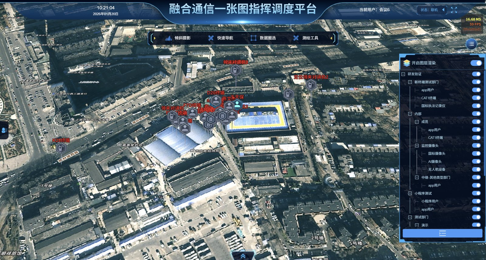
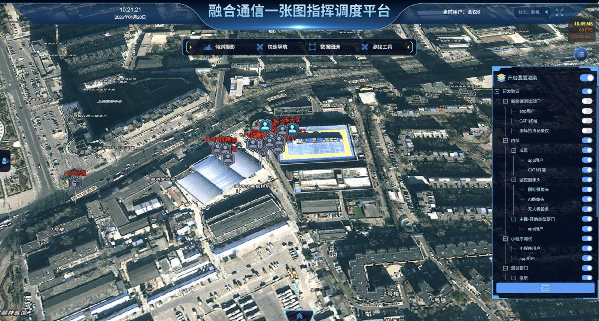
图3-31 图层渲染主要功能
调度台点击底部导航栏显示图标，显示更多功能，用户可在导航栏中点击目标功能进行界面跳转，或功能使用。
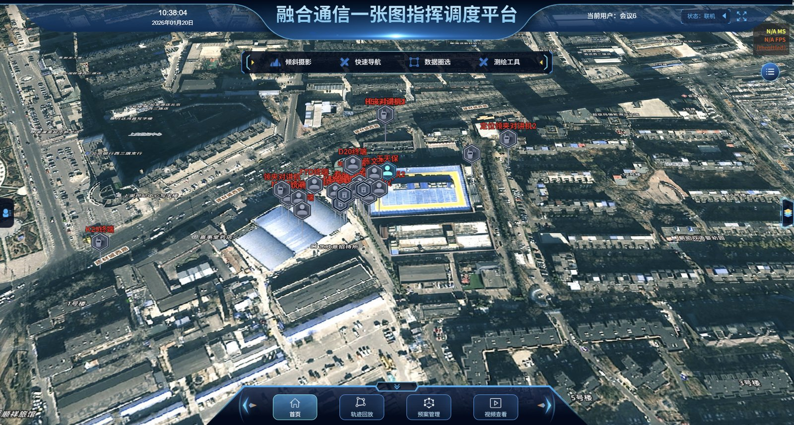
图4-1 导航栏4-1 轨迹回放
用户点击【轨迹回放】功能，弹出轨迹回访复选框。
可以选择终端、开始时间、结束时间，点击【查询轨迹数据】，调度台将在地图上绘制出终端的整个运行轨迹。当系统检测到两个上报点之间的时间间隔超过了5分钟，轨迹中用虚线表示，否则是实线。
选择回放的开始和结束时间时，其间隔时段必须在3天（72小时）以内。
终端列表显示的用户是上报过GIS信息的终端，回放时间按照秒为单位计算。
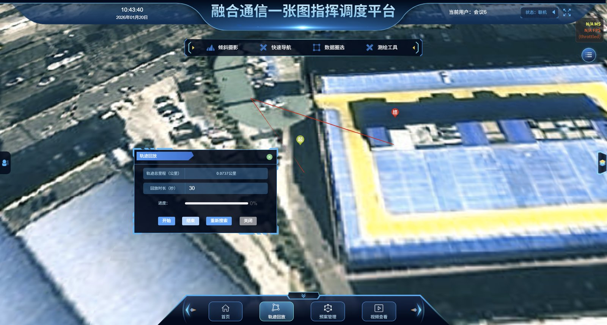
图4-2 轨迹回放
4-2 预案管理
用户点击【预案管理】功能，弹出预案管理复选框。
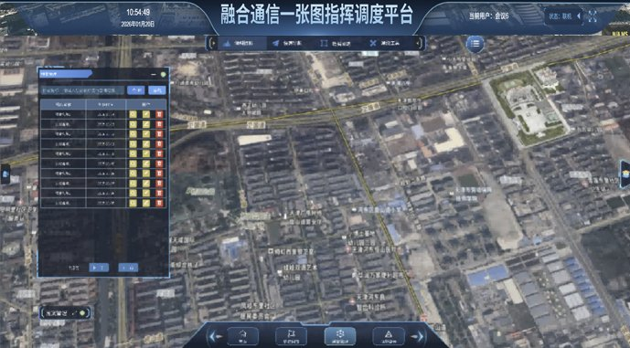
图4-3 预案管理
预案管理列表中显示用户已添加的预案，可点击查看快速定位到预案位置进行查看。
添加预案
用户点击预案管理添加按钮，弹出添加预案复选框。
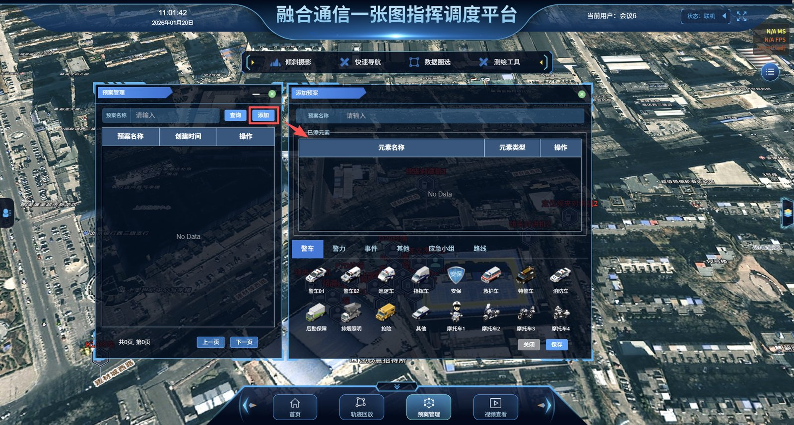
图4-4 添加预案
用户输入预案名称，挑选目标元素插入目标地理位置点击保存，即可完成添加一条预案。
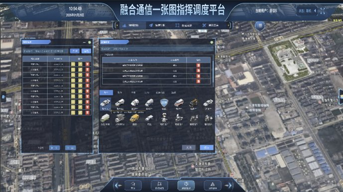
图4-5 预案列表
4-3 视频查看
用户点击视频查看功能，界面跳转视频窗口界面。
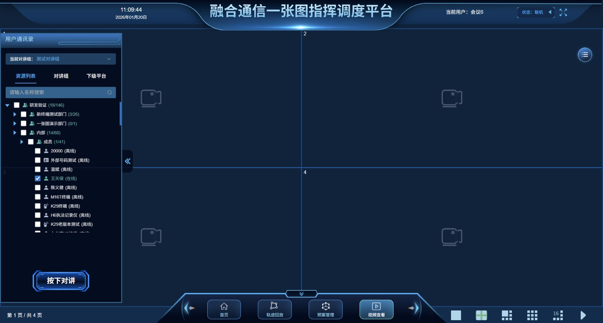
图4-6 视频功能界面
默认显示4屏视频界面，在非视频界面可接听或发起视频相关操作，发起视频后，自动跳转到视频界面。
- 支持1、4、6、9、16常用分屏数，视频窗口可切换至下一页/上一页，可以用鼠标拖拽来切换视频窗口；其中，6屏为大小屏显示；
- 接收的视频按窗口从左往右、从上往下显示，若视频数超过目前页面最大视频数，则跳转到下一页；
例如，目前显示的是4屏界面，接收第5路视频后，自动跳转到第二页，显示第5路视频；若关闭5路中的某一路视频，后面的视频不向上补齐，再来一路新视频的话按顺序填补之前的空缺视频窗口。
- 双击单个视频界面，可最大化视频窗口，再双击恢复；
视频调度：可同时支持最多16路的视频通话/查看/上传，语音只能存在1路，即接收到多路视频通话时，仅播放最后一路视频通话的声音，其他路的视频通话自动保持，若将其他路视频通话声音打开，当前视频通话的声音会被自动保持。
发起视频通话/查看
在“对讲组&通讯录显示区”中，滑动鼠标到某用户单击鼠标右键，出现快捷操作功能对话框，点击【视频呼叫/查看】按钮发起视频通话/查看；
- 视频去电界面，去电窗口上显示：被叫名称（号码）、去电状态；鼠标移动到视频界面，悬浮显示挂断按钮；
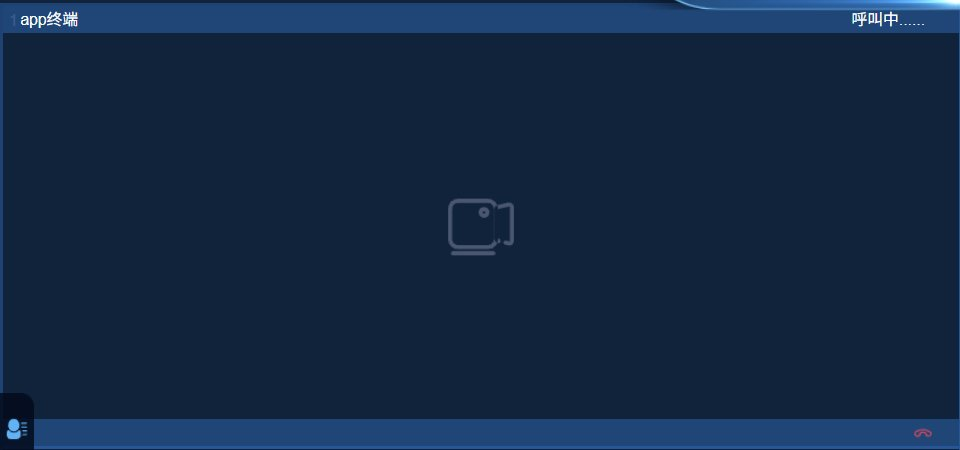
图4-7 视频去电界面
- 视频通话界面，通话窗口上显示：对端名称（号码）、通话类型；鼠标移动到视频界面，悬浮显示切换、抓拍、挂断按钮；
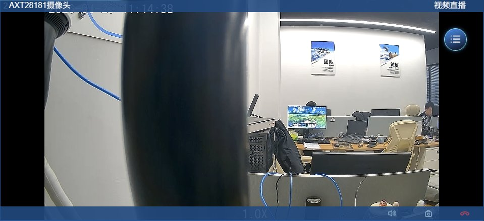
图4-8 视频通话界面
接收视频通话/查看
当调度台用户空闲时，有视频来电呼入，调度主界面中弹出提示窗口伴随振铃音；来电界面显示来电名称、接听、挂断；此时，调度台用户可选择接听或拒接来电。
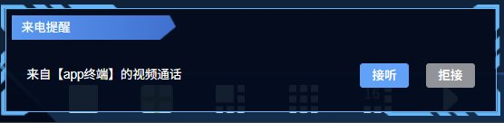
图4-9 视频呼叫来电提醒提示框
接听呼叫后，出现视频通话窗口：
在窗口标题栏显示对端名称/号码、通话类型；
鼠标移动到视频界面，窗口下方显示切换、分发、抓拍、挂断按钮。
切换
与终端或者APP用户视频通话/查看/上传的过程中，点击视频窗口的【切换】按钮，可以对终端或APP端的视频画面进行前置和后置摄像头的切换。
视频监控
当对端终端用户为GB/28181用户时，调度台用户在“对讲组&通讯录显示区”中，滑动鼠标到某GB用户单击鼠标右键，出现快捷操作功能对话框，点击【视频直播】按钮发起视频查看，该摄像机的视频画面和音频将被回传并显示在调度台的视频监控窗口中。
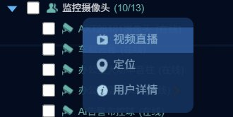
图4-10 GB用户操作菜单界面
云台控制
摄像头视频直播过程中，可全屏目标摄像头进行云台控制，可控制摄像头上下左右方向移动和焦距放大、缩小。如摄像头支持语音对讲，可点击“发起对讲”发送语音。
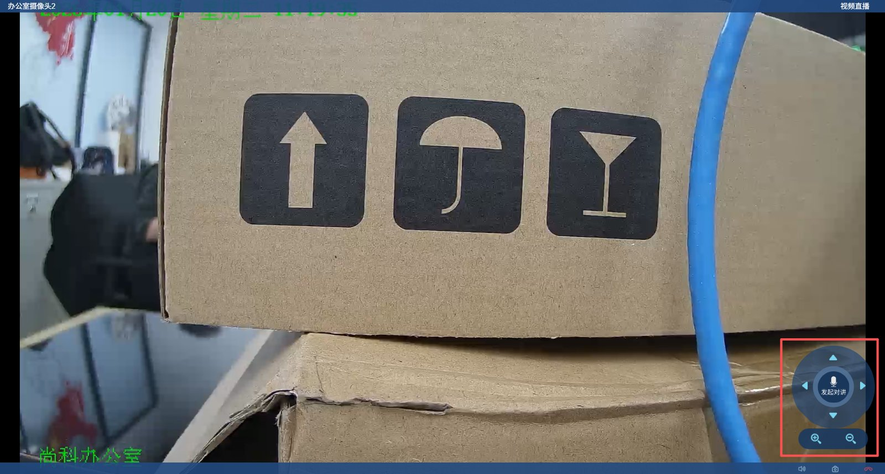
图4-11 云台控制界面
抓拍
视频通话/查看/上传的过程中，点击视频窗口的【抓拍】按钮，实现对视频画面的拍照功能；点击按钮后会自动下载当前图片到本地。
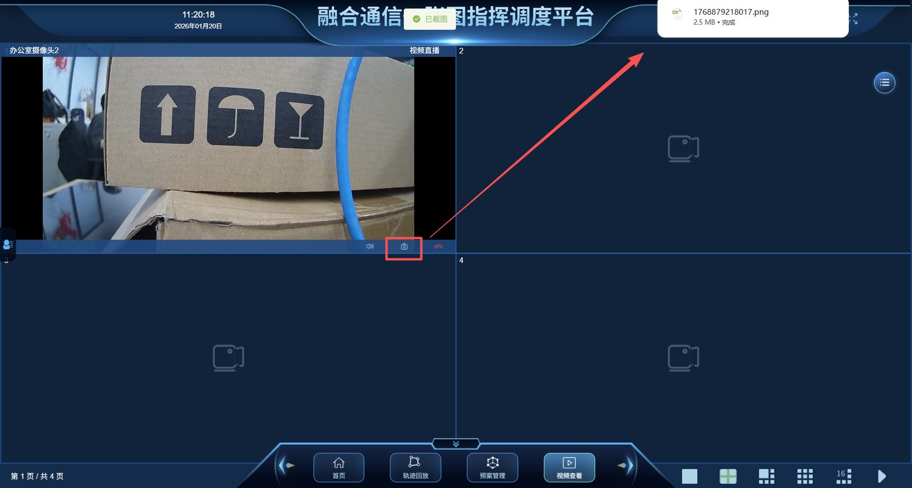
图4-12 抓拍界面
4-3 视频会议
用户点击视频会商功能，进入发起会议界面，如下图所示。
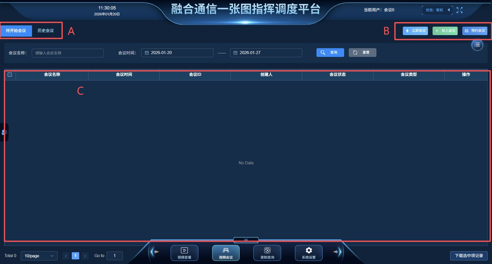
图4-13 发起会议界面
A：会议记录查询 | B：会议按钮 | C：会议记录列表 |
立即会议
立即会议按钮为发起立即会议按键，调度台点击立即会议按键，界面弹出立即会议窗口。
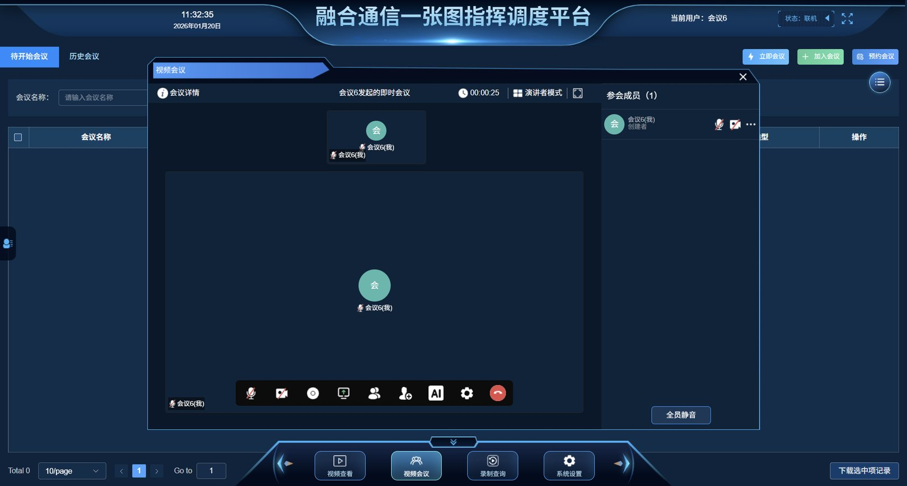
图4-14 立即会议弹窗
加入会议
点击加入会议按钮，弹出会议弹窗，用户可输入目标会议会议号加入会议；如下图 所示；
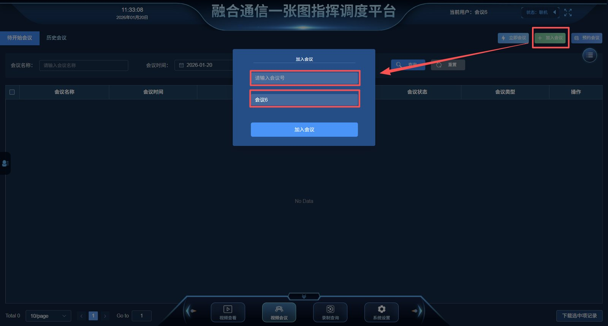
图4-15 加入会议
用户也可在加入会议前修改所属会议中名称；
填写完成后，点击加入会议，即可成功入会；
预约会议
点击预约会议按钮，弹出预约会议复选框，用户可对预约会议时间、会议密码、预约会议成员进行预约设置；如下图所示；
图4-16 预约会议
- 会议名称：填写问题，即设置本次会议主题。
- 开始时间：设置本次预约会议的开始时间，设置完成后成员可在该时间前5分钟进入会议。
- 会议时长：设置本次会议预计时长，成员可见本次会议预计时长；如超出时长，会议仍在进行，会议不会自动结束；
- 会议周期：会议周期可选择“不重复”、“每日重复”、“每周重复”、“每月重复”四个选项；
“不重复”即预约仅一次会议，本次会议结束，会议列表不再显示；
“每日重复”选择每日重复后，需设置截至日期；即本次预约会议会在每日“开始时间”进行，直至设置的“截至日期”形成周期会议；
“每周重复”选择每周重复后，需设置周会议日与截至日期；即本次预约会议在每周“开始时间”进行，直至设置的“截至日期”形成周期会议；
选择周会议日后，日期会高亮显示，再次点击即可取消该会议日；
“每月重复”选择每月重复时，需设置截至日期，即本次预约会议会在每月相同日的“开始时间”进行，直至设置的“截至日期”形成周期会议；
如本次预约会议为11月26日，截至时间为次年11月26日，则月周期会议会在往后每月的26日进行该次会议，直至次年11月26日。
- 音频设置：设置会议成员入会时是否开启麦克风；
- 会议安全：可设置会议密码，如成员加入会议则需要填写密码进入；
- 添加成员：点击添加成员，弹出企业成员复选框，调度台可在成员弹框中选择目标成员。
预约会议信息填写完成后，点击“预约会议”按钮，即可成功创建该次预约会议。
会议记录查询
可输入会议名称、时间日期条件进行查询历史会议，点击查询后历史会议在会议列表中体现。点击重置则可清除所有查询条件。如下图所示；
图4-17 会议查询
会议记录列表
会议记录列表显示历史所有会议，调度台用户可通过会议详情对目标会议进行溯源查看；如下图所示。
图4-18 会议记录
会议中的录制文件均可在“会议详情-录制文件”中进行下载。如下图所示。
图4-19 会议录制
开始会议
用户点击立即会议或开始会议后，界面进入会议系统；如下图所示。
图4-20 会议界面
A：会议主题 | B：会议视频窗口区 |
C：会议控制操作栏 | D：会议成员列表 |
会议主题
会议主题显示会议详情、会议主题、会议进行时间、会议视图，全屏显示会议。
- 会议详情：点击会议详情，显示此会议主题、创建者、会议号与开始时间等详细信息，可点击复制会议详情发送给其他用户入会，如下图2-1所示。
图2-1 会议详情
- 会议主题：会议主题默认是当前用户名称“XXXX发起的立即会议”。若用户需要自己修改在发起会议确认弹窗点击可自行进行修改。
- 会议进行时间：开始会议后立即开始计时，记录此次会议进行时长。
- 会议视图：平台进入会议页面会议参会成员显示视图支持演讲者模式和画廊模式切换。如下图所示。
图4-21 左“演讲者模式”右“画廊模式”
- 全屏：点击全屏，全屏显示会议系统界面，再次点击即可退出全屏。
会议视频窗口区
该区域上方小视频窗口显示所有成员视频画面，如下图所示。
图4-22 小视频窗口
下方主屏幕画面默认显示调度台视频画面，可双击目标成员小视频画面进行选看成员画面，成员小视频画面消失，显示在主屏幕画面。如下图所示。
图 4-23 主屏幕画面
用户可点击主屏幕画面上方取消选看，返回调度台视频主画面。
会议控制操作栏
 静音/解除静音：点击可对调度台讲话进行静音/解除静音操作。
静音/解除静音：点击可对调度台讲话进行静音/解除静音操作。- 开启/关闭视频：点击可对调度台视频进行打开/关闭视频操作。
- 录制按钮：会议过程中支持主持人可对会议进行录制，主持人点击录制按钮可对此次会议进行录制，录制按钮变为红色，弹出浏览器弹窗，弹窗中“同时分享标签页中的音频”选项需打开，打开后点击弹窗允许按钮即可录制本次会议，如下图所示。。开启录制后所有参会成员均会收到会议已被录制的消息提示。
图4-24 录制画面
结束录制时，再次点击录制按钮弹出结束录制提示弹窗，点击确定即可结束录制功能，点击取消则继续录制。如下图所示。
图4-25 结束录制
结束录制后，录制文件可在会议结束后会议列表中进入该会议详情-录制文件中下载查看。
- 屏幕共享：用户点击屏幕共享按钮，浏览器弹出共享页弹窗，可选择需要共享的页面，如：
浏览器标签页：仅共享目标浏览器标签页中内容显示在会议中。
窗口：仅共享目标窗口内容显示在会议中。分享窗口时无法分享窗口内音频。
整个屏幕：共享内容随电脑画面显示在会议中。
选择需要共享的画面后点击确定，页面跳转进入共享的页面中，此时会议已经开始共享画面，如下图所示。
图4-26 会议共享
共享屏幕同一时间仅可以存在一路，停止共享时点击浏览器上方停止共享即可结束共享屏幕。
注：共享屏幕时若开启录制功能，结束共享屏幕时同时会结束录制功能。
- 成员列表：入会时默认打开成员列表，点击可关闭/展开成员列表，可在成员列表中看到成员权限（主持人\与会者）、成员状态，主持人可对目标成员进行更多操作，如下图所示。
图4-27 成员列表
成员列表中可看到所有成员的麦克风和视频状态，点击成员右侧“更多选项”可对目标成员进行更多操作，如下图所示。
图4-28 更多选项
A．静音\解除静音 | B．开启\关闭视频 | C．设置选看 |
D．设为焦点视频\取消 | E．将成员移出会议 | F. 修改视频分辨率 |
- 静音\解除静音：主持人可对目标成员进行静音\解除静音操作，静音后目标成员讲话时会议成员均听不到，点击后目标成员右侧麦克风标识对应操作进行变化。
- 开启\关闭视频：主持人可对目标成员进行开启\关闭视频操作，开启目标成员视频时，会议成员均可看到目标成员画面；关闭目标成员视频时，会议成员均看不到目标成员画面；点击后目标成员右侧视频标识对应操作进行变化。
- 设置选看：调度台可选择成员视频“设置选看”设置选看后，调度台主屏幕画面显示该成员视频画面，可挑选用户进行选看。
- 设为焦点视频\取消：主持人可对目标成员进行设备焦点视频\取消焦点视频操作，设为焦点视频时目标成员视频图像显示在会议大屏中，所有会议成员会议画面均为此目标成员视频画面且无法更改，主持人进行取消焦点视频时会议画面后，其他会议成员屏幕提示可点击“取消选看”恢复视频画面。如下图所示。
图4-29 焦点视频
- 将成员移出会议：主持人可对目标成员进行移出会议操作，成员被主持人移出会议后其他会议成员会议大屏提示目标成员离开会议。如下图所示。
图4-30 成员离会提示
- 修改视频分辨率：主持人可对目标成员视频画面进行分辨率修改，如现场成员视频出现卡顿，掉帧等现象时，可对该视频画面分辨率进行修改。
 邀请成员：用户可在会议开始时点击邀请成员按钮，会议界面弹出邀请成员复选框，选择目标成员后点击确定按钮即可邀请成员入会，如下图所示。
邀请成员：用户可在会议开始时点击邀请成员按钮，会议界面弹出邀请成员复选框，选择目标成员后点击确定按钮即可邀请成员入会，如下图所示。
图4-31 邀请成员
邀请成员时，可邀请“企业通讯录成员”“外部监控设备”“外部联系人成员”三种类型；
“企业通讯录成员”即企业中各部门成员，可选择各部门成员邀请入会；
“外部监控设备”即企业下级平台成员，可选择下级平台中监控设备入会；
“外部联系人成员”会议通过外部手机号邀请成员，成员接收链接短信通过链接入会；
- AI转写：调度台点击AI转写功能，界面右侧显示AI转写列表，AI转写功能实时同步转写会议中成员讲话内容并形成记录展示；如下图所示。
图4-32 AI转写
- 结束\离开会议：调度台点击红色结束按钮弹出“结束会议”“离开会议”两个选项，如下图所示。
图4-33 结束按钮
结束会议：调度台点击结束会议，即结束此次视频会商，调度台返回会议列表界面，会议其他成员返回各自应用界面，会议结束后调度台可在会议列表中查看到此次会议详情。
离开会议：调度台点击离开会议后，调度台返回会议列表界面，此时会议正常进行，离开的会议显示在会议列表中可再次加入，如下图所示。
图4-34 离开会议
4-4 录制查询
用户点击录制查询功能，界面跳转录制查询界面.
图 4-35 录制查询界面
可以查询对讲记录、通话记录、临时对讲记录、GIS数据、上下线记录、消息记录。
在查询界面上方，调度台用户可通过人员、类型、时间范围等信息进行查询，查询结果也可通过勾选点击【下载选中项】或【全部下载】按钮下载到本地。
4-5 系统设置
用户点击设置功能，界面跳转设置功能页面，页面右侧显示显示系统设置、修改密码。
图 4-36 设置界面
- 接听设置：终端开启自动接听后，根据当对讲发起的用户等级与当前调度台用户的等级关系，设置系统可自动执行的操作，包括：忽略、接听、提示；

图 4-37 接听设置
- 忽略：不接听对讲来电；
- 接听：自动接听对讲来电，即开启对讲监控；
- 提示：弹出提示框，告知调度台用户有对讲来电，由用户自行决定是否接听。
- 主页标题设置：用户可以自定义本系统的标题，默认为空。
图 4-38 主页标题设置
- 地图设置：可以选择目标城市为默认定位点，设置完成后点击保存，刷新网页即可生效。
图 4-39 地图设置